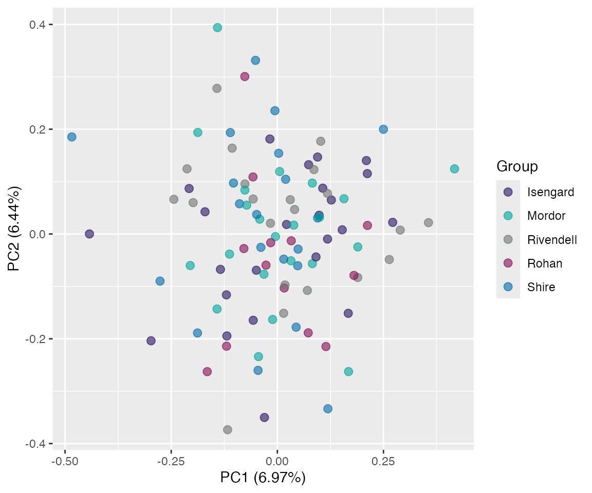
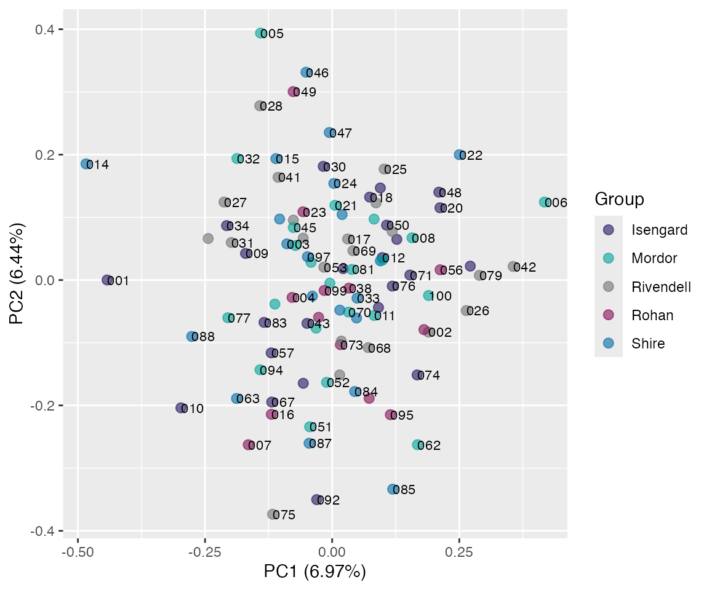
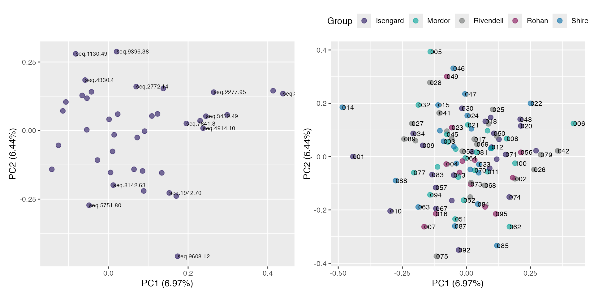
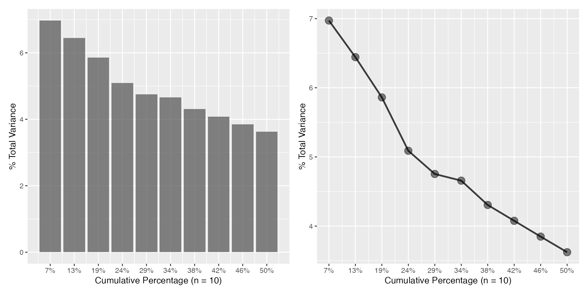

Introduction to pcapkg
pcapkg.RmdThe pcapkg package contains the general functions
necessary for the unsupervised exploratory analysis of high-dimensional
proteomic data using Principal Component Analysis (PCA). Primary tools
related to calculation of principal components and the visualization of
rotation (loadings) and projection spaces of these components.
Useful functions in pcapkg
-
pca()- perform principal component analysis (PCA) on a matrix of high-dimensional proteomic data.
-
plot_scree()- generate a “scree”-plot of the top variances for a
pcaclass object.
- generate a “scree”-plot of the top variances for a
-
plot_rotation(),plot_projection()- plot specific rotation and projection space objects
-
get_*()- various “getter” functions to retreive features from the PCA.
The PCA
Perform principal component analysis (PCA) on a 2-dim data matrix,
via the decomposition of the variance-covariance matrix
(SVD). Some modification of the standard
stats::prcomp() is performed. Data transformations
(e.g. centering and/or scaling) can be performed via its arguments.
pr <- pca(pcapkg:::log10_ft(simdata))
pr
#> ── PCA Object ─────────────────────────────────────────────────────────
#> Rotation 40 x 49 (PC1:PC40)
#> Projection 100 x 56 (PC1:PC40)
#> Projection variables '.id', 'id', 'class_response', 'reg_response', 'time', 'status', 'SampleId', 'SlideId', 'Subarray', 'SiteId', 'age', 'gender', 'HybControlNormScale', 'NormScale_40', 'NormScale_0_005', 'NormScale_1'
#> ═══════════════════════════════════════════════════════════════════════Plotting
There are convenient plotting methods for both the
rotation and projection spaces.
Projection space
plot(pr, "p", color = SiteId) # unquoted string!
plot(pr, "p", color = SiteId, id.labels = id) # with labels
Combine rotation and projection
rot <- plot(pr, "r", identify = TRUE)
proj <- plot(pr, "p", color = SiteId, id.labels = id) +
theme(legend.position = "top")
rot + proj
Corresponding Scree plots
a <- plot_scree(pr, n = 10L)
b <- plot_scree(pr, n = 10L, type = "l")
a + b